Primeros pasos#
En el menú lateral izquierdo va a encontrar todas las opciones que usted va a poder realizar en el aplicativo de Persey.
Guia visual :
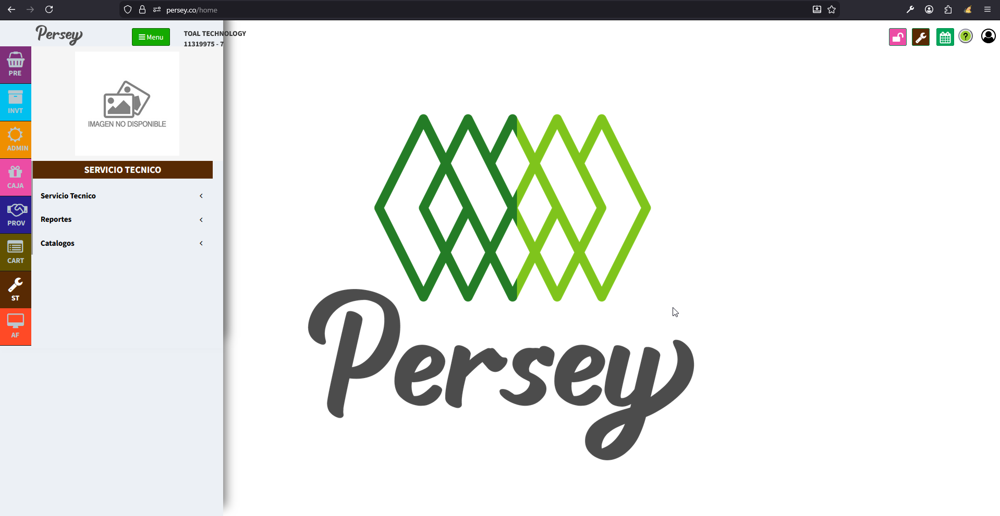

En el menú lateral izquierdo va a encontrar todas las opciones que usted va a poder realizar en el aplicativo de Persey.
Aquí podras guiarte paso a paso para realizar un nuevo servicio tecnico
Dirijase en el menú a la opcion de Servicio tecnico
Al pulsar sobre el botón "Nuevo Servicio", se nos abrirá un formulario en el cual llenaremos los campos solicitados. Para mas detalle vea el siguiente video
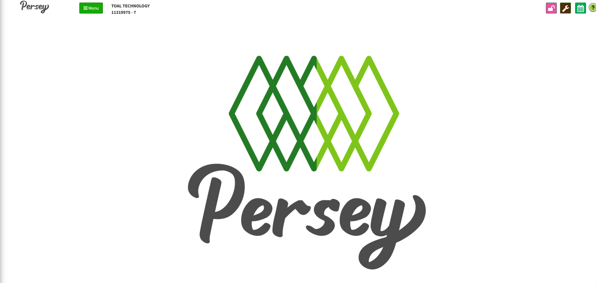Lo primero que haremos es ingresar, la informacion del cliente damos en el icono de la lupa, se nos abre la lista de clientes, escogemos el indicado, así
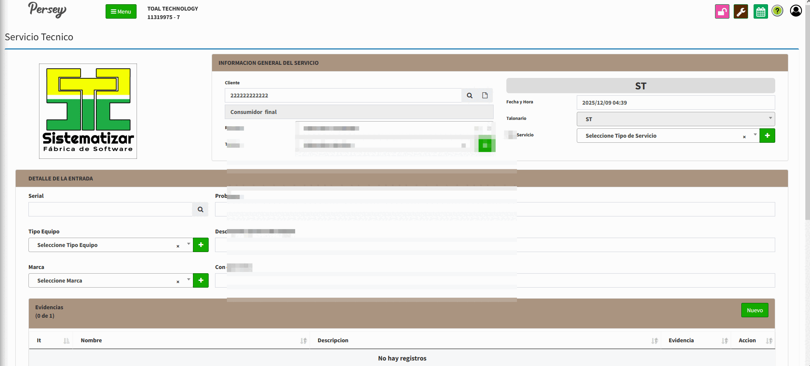Si usted lo requiere, puede crear un tercero rapidamente de la siguiente manera
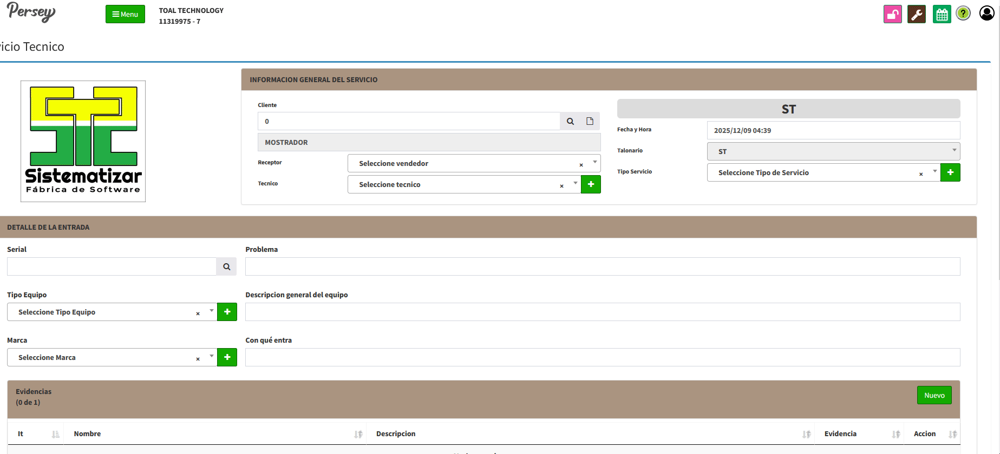Continuamos llenando los campos de informacion general de servicio
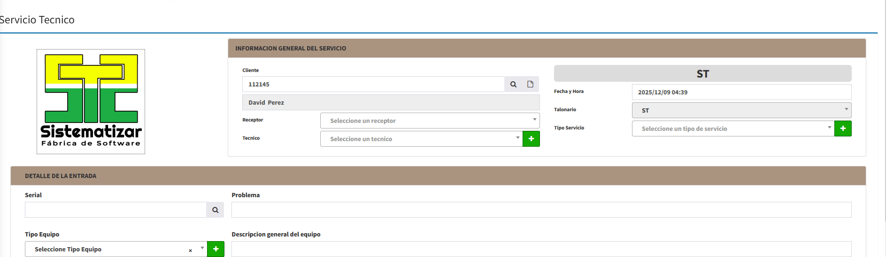Podemos crear un tecnico nuevo y un servicio nuevo
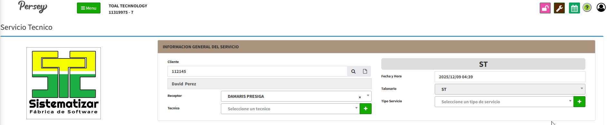Ya tenemos los datos de la informacion general del servicio, A continuacion seguiremos con el detalle de la entrada, llenamos los datos solicitados

Podemos agregar una evidencia si es que asi se desea
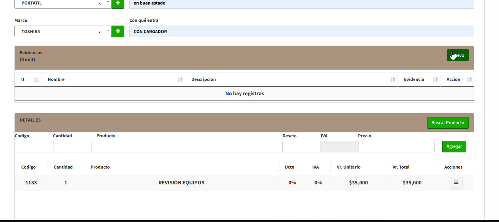Ademas podemos adicionar un detalle al ingreso, un ingreso es una venta que se realiza en el servicio. Se puede utilizar un producto ya registrado previamente o uno nuevo en su lugar.
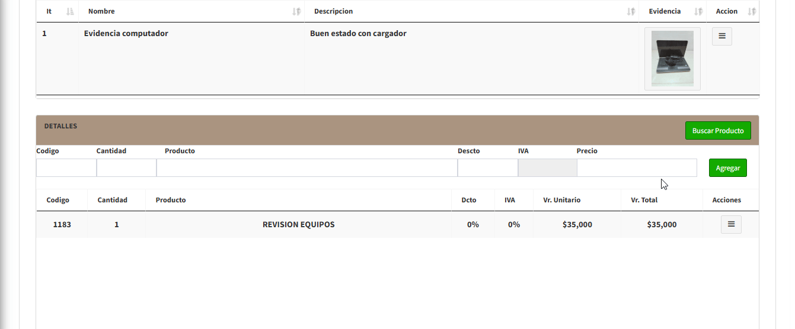Por ultimo damos click en guardar y asi hemos finalizado con el registro de nuestro servicio tecnico
En esta seccion tendremos en una lista todos aquellos servicios tecnicos que hallamos creado. Podemos hacer que solo aparezcan los servicios por un rango determinado de fechas.
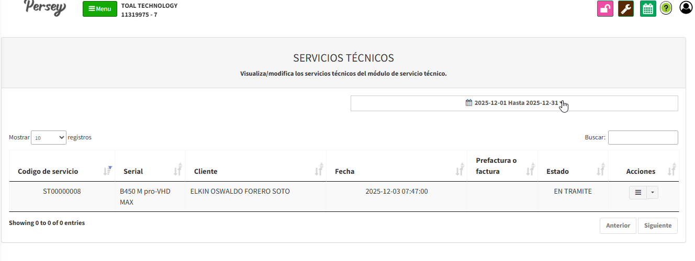Ademas podemos modificar un servicio tecnico creado anteriormente dando click en editar entrada. Modificamos los campos que sean necesarios y damos click en guardar. Imprimos factura si es necesario.
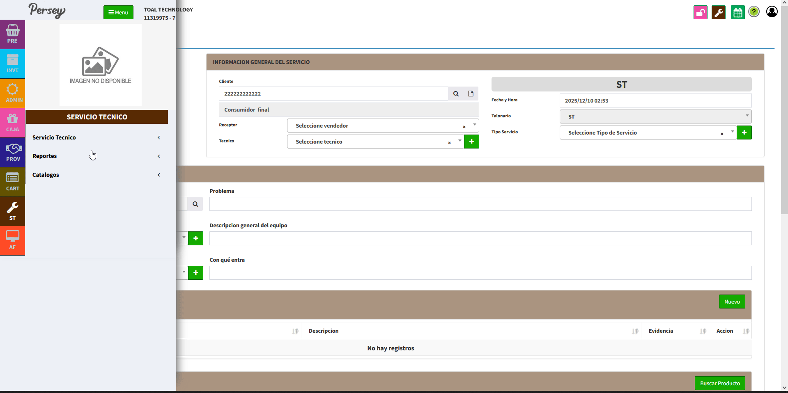Cuando se halla terminado el servicio tecnico, damos click en editar salida. cerramos el proceso y guardamos los cambios.
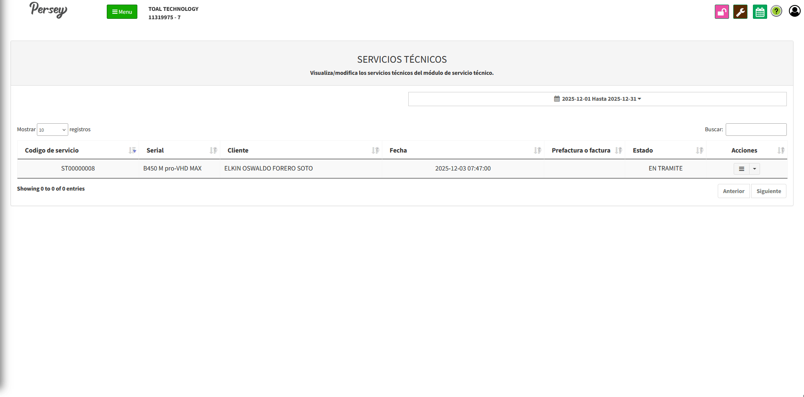Aquí podras guiarte paso a paso como generar reportes para el posterior análisis
Dirijase hacia la sección de "Reportes" y elija la opción de "Compras por Periodo". elija las fechas sobre las cuales quiere usted ver el reporte y posterior a ello oprima en "Buscar"
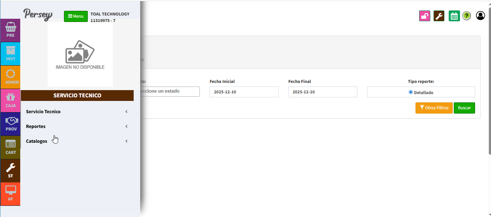En todos estos reportes podremos descargarlo en pdf o en excel
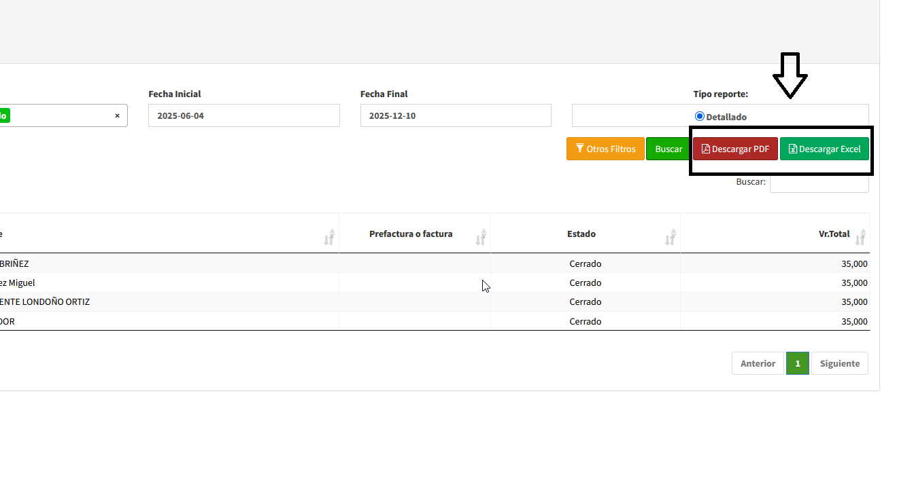Dirijase hacia la sección de "Reportes" y elija la opción de "reportes por tecnicos". seleccione el tipo y las fechas sobre las cuales quiere usted ver el reporte y posterior a ello oprima en "Buscar"
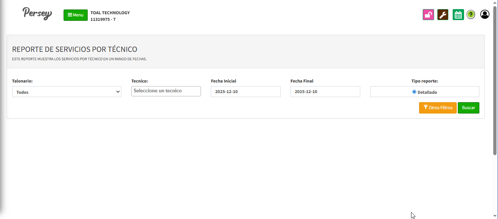No olvides que puedes generar el reporte en excel o pdf
Dirijase hacia la sección de "Reportes" y elija la opción de "Servicios Facturados". elija el nombre del tecnico y las fechas sobre las cuales quiere usted ver el reporte y posterior a ello oprima en "Buscar"
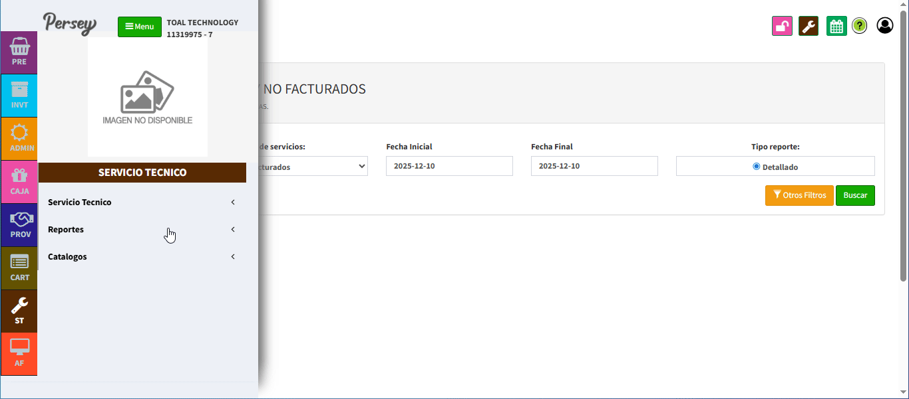No olvides que puedes generar el reporte en excel o pdf
Un catalogo es una lista de ciertos elementos que se utiliza en crear un servicio tecnico
Dirijase hacia la sección de "Catalagos" y elija la opción de "Tecnicos". Allí podrá ver la lista de tecnicos creados, podrá crear uno nuevo dando click en "Nuevo" o editar uno ya existente dando click en "Editar"
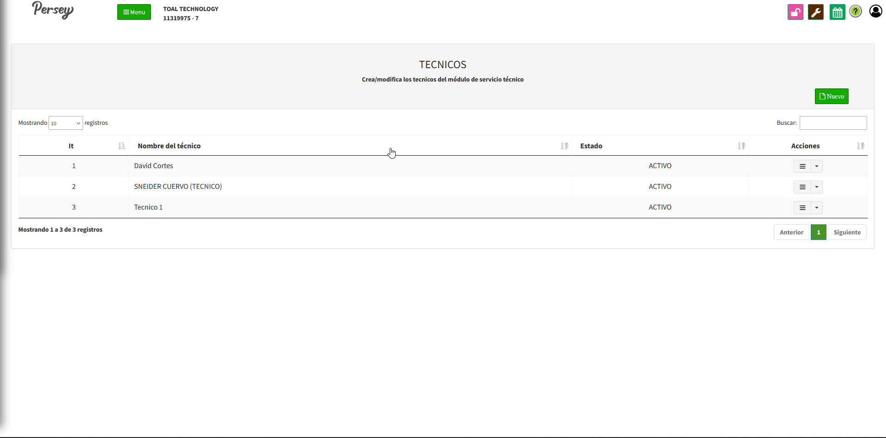Dirijase hacia la sección de "Catalagos" y elija la opción de "Tipo equipos". Allí podrá ver la lista de los diferentes equipos creados, podrá crear uno nuevo dando click en "Nuevo" o editar uno ya existente dando click en "Editar"
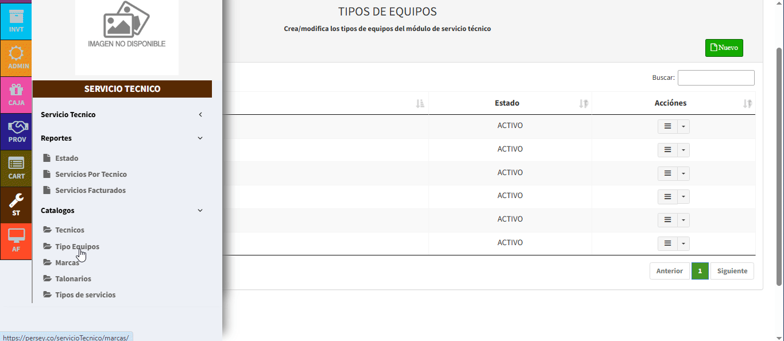Dirijase hacia la sección de "Catalagos" y elija la opción de "Marcas". Allí podrá ver la lista de marcas creadas, podrá crear una nueva dando click en "Nuevo" o editar uno ya existente dando click en "Editar"
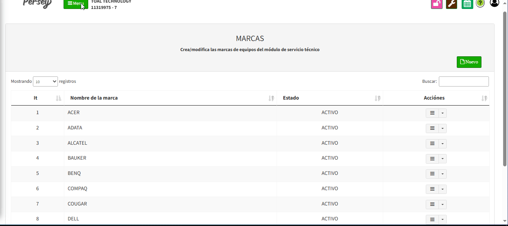Dirijase hacia la sección de "Catalagos" y elija la opción de "Talonarios". Allí podrá ver la lista de talonarios creados, podrá crear una nueva dando click en "Nuevo" o editar uno ya existente dando click en "Editar"
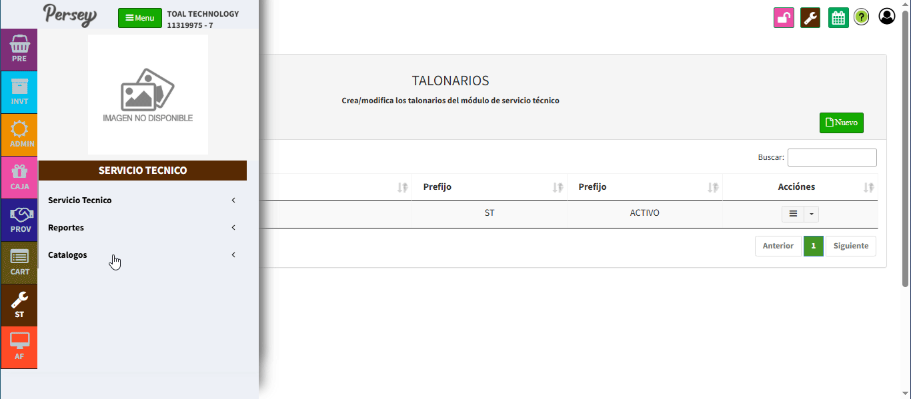Dirijase hacia la sección de "Catalagos" y elija la opción de "tipo de servicios". Allí podrá ver la lista de tipo de servicios creadas, podrá crear una nueva dando click en "Nuevo" o editar uno ya existente dando click en "Editar"
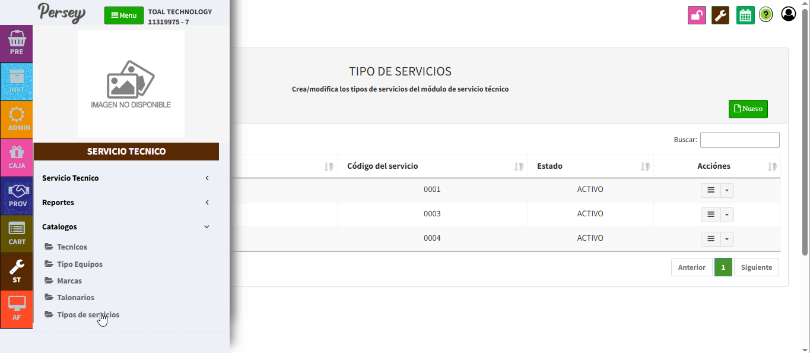